『中小企業のAI業務基盤 / 企業の成長を支援するビジネスバディ』のロゴ開発にあたり、競合SaaS・AIブランドのリサーチから方向性3案・計8案を設計しました。リサーチの根拠 → 設計意図 → 案 → フィードバックのお願い、の順でご覧いただけます。
最終ロゴを SVG / PNG / JPG の3形式で書き出しました。下のボタンから全データ（ZIP）を取得できます。各形式の使い分けと注意点は同梱の README に記載しています。
46パターン × 3形式 = 138ファイル（約5.7MB）。
ZIPは 「ロゴ / ロゴ＋日本語 / アイコン＋ロゴ / Family」の4フォルダに整理済み。各フォルダ内は svg / png / jpg に分かれ、使い方READMEを同梱しています。
拡大しても劣化しない。Web・印刷・Figma/Illustrator用。文字は図形化済みでフォント不要。
スライド・SNS・資料で背景に重ねたい時。横2400px / アイコン1024pxの高解像度。
Word・メールなど透明を扱えないツール用。白地（白抜きロゴは濃色地）。
※ ZIPを展開すると種類別フォルダ（ロゴ／ロゴ＋日本語／アイコン＋ロゴ／Family）が現れます。個別だけ欲しい場合は、下の⑧⑨に表示しているロゴを右クリック → 名前を付けて保存でも取得できます。README に使い方・余白ルール・禁止事項・カラー値を記載しています。
「なんとなく良いロゴ」ではなく、市場のどこが混んでいて、どこが空いているかを先に確定してから設計しています。調査は6領域・対象約30ブランドを並列で実施し、すべての記述を別エージェントが事実検証（古いロゴ情報・誤認の排除）した上で統合しました。
会計・経費 / 人事・勤怠 / グループウェア・名刺の3領域で、各社の色（公式SVG実測のhex値）・モチーフ・書体を収集
マルチプロダクトのロゴ体系8社（Google / Microsoft / Zoho / freee / 楽楽ほか）と、2025-26年AIブランドのロゴトレンド
「バディス / マイバディ / バディックス」3候補の商標（J-PlatPat称呼検索）・商号・ドメインの衝突チェック
調査結果を検証担当が抜き打ち再調査（誤り3件を修正）。検証済みの事実だけでポジショニングを確定
業務SaaSのロゴは濃い青 × ゴシック体 × 成長モチーフに極端に密集しています（下図左下）。特に #0054AC〜#0E63C4 の濃青帯には4社がほぼ同色で並び、新規参入がここに置かれると「誰でもない会社」になります。一方、暖色 × 人格があり、かつ複数プロダクトを束ねる「格」を持つブランドは不在 — ここが BUDDIS の席です。
会計系6/7社・HR系3/6社が青。識別力がほぼ失われています
丸ゴ小文字（freee / sansan / kintone…）も「親しみSaaSの記号」として飽和
ツバメ・矢印・三角形・新芽・吹き出し。どの会社の説明にもなる形
製品ごとの色分けが乱立し、各社のパレットが衝突中
Copilot/Geminiが占有済みで陳腐化。2026年は世界的に撤退傾向（UX研究でも「機能が伝わらない」と実証）
2026年のAIブランディングの結論。BUDDISは「AIっぽさ」ではなく「相棒であること」を形にします
国内AI SaaSはネイビー一色で、暖色のAIブランドはほぼ完全な空白。「青い業務システム＝難しそう」の既視感を色で外し、「怖くないAI」を先に伝えます。既存の暖色（MF・ラクス・kubell等）と被らないレンガ〜杏の色相を選定済みです。
調査した8社のプロダクト体系の中に、「2つの形が対になる」ことを文法にしたロゴは存在しません。「経費のバディ」「帳票のバディ」というプロダクト思想と、ロゴの構造が一対一で一致します。
市場のロゴタイプは欧文ゴシックばかりで、人間味のある文字・カタカナ主役のロックアップは空白。ITに不慣れな方が読める・呼べる・覚えられることに直結します。
サービス名は「バディス / BUDDIS」で確定済みです。確定にあたって実施した3候補の調査経緯を共有します。結論として、3候補の中で商標登録の余地を残していたのはバディスのみでした。
| 候補 | 商標の状況 | 判定 |
|---|---|---|
| バディス BUDDIS |
称呼「バディス」完全一致の登録ゼロ。ソフトウェア（9類）・SaaS（42類)に登録余地あり。※「バディスマ」（東京海上日動・42類）等との類否は出願前に弁理士確認を推奨 | ◎ 推奨 |
| マイバディ MyBuddy |
SCSK株式会社が「MYBUDDY」を9類・42類で登録済み（登録6350310）。35/41類も他社登録あり。SaaSでの取得はほぼ不可能 | ✕ 不可 |
| バディックス BuddyX / Buddix |
LDH JAPANが「buddix」を9類ほかで2件登録済み、さらにニッタ株式会社が「バディックス」を9類で保有（2011年〜）。拒絶リスク大。同名のコンサル会社（buddix.jp）も2025年に出現 | ✕ 不可 |
プラットフォーム内のAIアシスタントの呼び名として活かす設計を提案します。「バディスの中で、あなたを助けるのがマイバディ」という2層構造です。温かい名前の資産をキャラクターとして転用でき、方向性B（顔のあるマーク）とも噛み合います。
ダンス&ボーカルグループ「BUDDiiS」が「buddis」のWeb/SNS検索を占有しています（2026年メジャーデビューで今後も増大見込み）。ローンチ時は「バディス 経費」など複合キーワードでのSEO設計を前提にしてください。
3つの空席（暖色 / ペア構造 / 手の痕跡）を、振り切り方の違う3方向に展開しました。共通するのは「2つの要素が寄り添う・支え合う」構造がどの案にも入っていることと、✦スパークなどのAI記号を一切使わないことです。
レンガ #B3492E / 杏 #E58A64 / 珊瑚 #E8704F / 墨 / 生成り。競合の暖色（MF・ラクス・kubell・海外AI）と重ならない色相を実測値で確認済み。
濃い色＝支えるバディス、明るい色＝お客様。色の組でも「支え・支えられる」関係を語ります。単色化（モノクロ・FAX・印刷）でも成立する形だけを採用しています。
「バディス経費」「バディス勤怠」…と増えても崩れないよう、共通シンボル＋接頭辞ネーミング＋抑えたサブカラーの体系（freee型の文法 × Microsoft型の色規律）を最初から設計に含めています。
「親しみ ⇄ 信頼」の軸のどこに立つかで、A（中間）・B（親しみに振る）・C（信頼・和に振る）の3方向をご用意しました。各方向の★がリード案です。正解はお客様の肌感にあります — 直感の「好き/違う」も大切なフィードバックです。
「B」「b / d」という文字の構造そのものが「2つの形＝ふたり」でできている事実を使った案です。装飾ではなく、名前そのものから生まれたモチーフです。
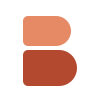
16px狙い: 2つのDブロックが寄り添ってBになる。下の濃い色が上の明るい色を支える＝「企業を支えるバディ」。小さなファビコンでもBとして読めます。
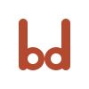
16px狙い: buddisの子音 b と d は鏡像の双子。ボウル同士が向き合って接する＝「向き合うふたり」。単色で規律のあるバージョンです。
狙い: 中央の dd ＝ 並んで立つふたり。文字だけの最小構成。シンプルさ最優先の比較用ベースラインです。
「AIは怖い・難しそう」と感じる方への最短距離は顔です。世界的にマスコットの再評価が進んでおり（ブランド認知+18%/帰属意識+24%の調査報告）、LINE・Chatworkが育てた日本の「丸み文化」とも好相性。AIアシスタント「マイバディ」をロゴに宿らせる前提の設計です。
狙い: アプリアイコンがそのまま「マイバディの顔」。左右の目の高さをわずかにずらした手描きの呼吸。プロダクトごとに表情を変える拡張も可能です。
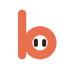
16px狙い: マークの b が頭文字を兼ねて「b + uddis」で社名が完成。bのボウルの中に目＝AIバディが住んでいる、という物語の引き算構造です。
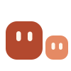
16px狙い: 大きい方＝バディス、小さい方＝隣にいるマイバディ。「ふたり」が一目で伝わる最直球案。最もキャラクター性が強い分、堅い場面との相性は要検討です。
「バディス」の濁点（゛）は、最初から2つ寄り添っています。日本語の文字体系に埋まっていたペアシンボルの発掘です。カタカナ主役のロックアップは、英字が読みにくい方への可読性にも直結します。競合に和文×墨×暖色アクセントのロゴは存在しません。
狙い: 濁点の2画は長さと角度をわずかに変え、書き文字の呼吸を残しています。確定後は社名ロゴの濁点そのものをこのシンボルに置き換え、名前とマークが同じDNAになります。
アイコンと社名が同じ形を共有するため、説明がなくても「あの2つの点＝バディス」と覚えてもらえます。次の段階で全文字に展開します。
狙い: 同じ濁点シンボルを「老舗の安心感」の深緑で。落ち着き最優先の保守案です（この場合、暖色戦略は色ごと深緑に切り替えます）。
BUDDISはファミリー展開が前提のプロダクトです。バディス帳票・経費・勤怠・名刺・ファイル・チャット・AI・分析…と増えても、共通シンボル＋「バディス〇〇」＋控えめなサブカラーで一目で同じ家族と分かる体系にします。リード3案それぞれで展開した姿を比較してください — ロゴ単体の好みより、この「並んだ時の顔」が決め手になります。
A1 ツインD で展開した場合
B2 b-フェイス で展開した場合
C1 濁点ペア で展開した場合
※ 製品名は日本語（経費・勤怠・帳票…）を推奨します。「名前を見れば何のツールか分かる」ことが、ITに不慣れな方への最大の使いやすさです。サブカラー（経費=緑 等）は仮の値で、方向性確定後に体系を設計します。
ご回答ありがとうございました。いただいた6つの回答すべてを以下のとおり制作に反映しています。
| いただいたご回答 | 反映した内容 |
|---|---|
| Q1: 欧文ワードマーク buddis が好み （A3 dd / C1 濁点ペアも評価） | buddis を正式ロゴの主役に確定。フォントをそのまま使わず、1文字ずつパスデータ化した上で dd の字間だけ詰めて「ふたりが寄り添う」を字面に組み込みました。カタカナ可読性のため、選ばれた C1 の濁点シンボルを「読み仮名・アイコン・和文ロゴ」として組み合わせた表記パターンを⑧に用意しています |
| Q2: トーンは中間 | ロゴはタイポグラフィ主体（信頼）に保ち、キャラクター要素はロゴから分離しました（⑩のマイバディはロゴに混ぜない運用設計） |
| Q3: プロダクト画面・Webサイト | デジタル最優先で、ファビコン16px専用版・アプリアイコン・ダークモード版を先に整備（⑧）。次段階でアプリ画面とWebサイトのモックに載せて検証します |
| Q4: ファミリーは控えめサブカラー＋文字 | この方式で確定し、欧文・和文・ルビ付きの3表記でマルチプロダクトの見え方を比較できるようにしました（⑨） |
| Q5: マイバディ「ぜひやりたい」 | キャラクター方向性を3案スケッチ（⑩）。目の形をロゴの濁点と同じ「傾いた2つの点」にして、ロゴとキャラが同じDNAを持つ設計です |
| Q6: 今後のイメージ戦略の助言がほしい | ブランド運用の指針を⑪にまとめました |
全ワードマークをフォント依存のないパスデータ（SVG）に変換。どの環境でも同じ形で表示・印刷でき、デザインツール（Figma等）でそのまま編集できます
「バディス」の濁点を、フォントの実際の濁点の位置・大きさをプログラムで計測した上でブランドシンボルに置換。自然に読めて、近くで見るとブランドが宿る仕上がりです
単体・ルビ付き・バイリンガル・アイコン連結・縦積み・ビジョン併記の6パターン＋モノクロ/ダーク対応を一括設計し、用途別の使い分けを整理しました
気に入っていただいた buddis を主役に、「英語が読めない方にもバディスと読める」表記を揃えました。ご要望の「英語ロゴの上に日本語が乗る版」を新たに作成（下の Bilingual）。すべて納品データ（SVG/PNG/JPG）として書き出し済みで、各カードからそのまま使えます。
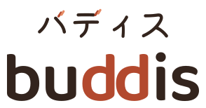
読みやすいサイズの「バディス」を buddis の真上に重ねた版。Webサイトのファーストビュー・資料表紙・看板など「初めて見る人」に名前と読み方を同時に伝える場面の推奨形です。濁点はブランドシンボルのまま入っています。
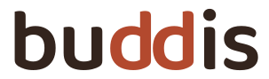
ヘッダー・小スペース・透かし用。dd の字間をわずかに詰め、「寄り添うふたり」を字面に内蔵しています。
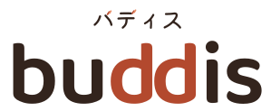
読み仮名を控えめに添えた版。Bilingual より文字が小さく、ヘッダーなど縦幅が限られる場面に。
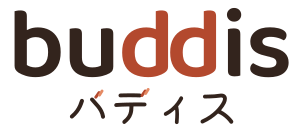
和文をしっかり読ませたい場面（請求書・封筒・契約書類など）。
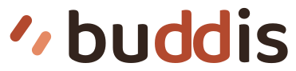
濁点ペアのシンボル＋buddis。アプリ内ヘッダーやログイン画面に。
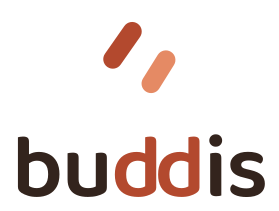
正方形に近いスペース（SNSプロフィール、スプラッシュ画面）用。
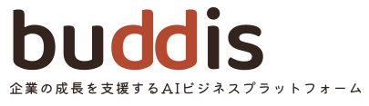
『企業の成長を支援するAIビジネスプラットフォーム』を添えた提案書・登壇資料用。
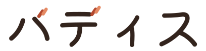
和文が主役の場面用。「バ」「ディ」の濁点がブランドシンボルになっています。
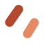
FAX・印刷・刻印用の黒1色版＋シンボル単体（透かし用）。色が使えない場面でも成立します。
左から: 生成り地 / ブリック地 / 濃色地 / 16px専用（太め設計）。3種とも納品済みなので、お好みで選べます。
「バディス経費・勤怠・AI…」と8つ以上に増えたときの見え方を、3表記で比較しました。推奨は F-A（buddis＋日本語製品名） — ブランドは欧文で統一しつつ、「何のツールか」は日本語で即座に分かる構成です。
F-A buddis＋日本語製品名 ★推奨・納品済み
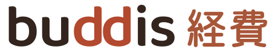
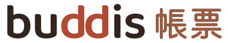
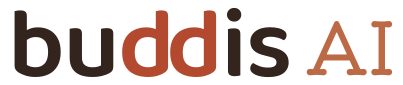
F-B ルビ付き＋日本語製品名（初出・営業資料向け）
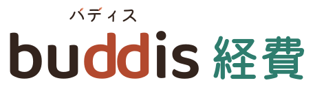
F-C 和文のみ（社内文書・FAX等の保守形）
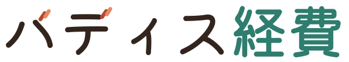
※ 運用イメージ: アプリのホーム画面・Webサイト → F-A / 初めてのお客様に渡す資料 → F-B / 和文しか使えない帳票 → F-C。サブカラーは仮の値で、確定後に暖色系で体系設計します。
「ぜひやりたい」のお声を受けた最初のスケッチです。ポイントは2つ — ①ロゴには混ぜず、プロダクト内の案内役・ヘルプ・通知で活躍させる（トーン「中間」を守るため）、②目の形がロゴの濁点と同じ「傾いた2つの点」（ロゴとキャラが同じDNAでつながる）。
丸角フェイス。アプリ内の吹き出し・通知アイコンとして最も使いやすい形。
buddis の頭文字 b に住むキャラクター。ロゴとの連動性が最も高い案。
「お客様とバディ」のふたり組。ストーリーテリング（LP・紹介動画）向き。
「逆に助言がほしい」とのことでしたので、ブランドを長く強く保つための指針を6つにまとめました。
レンガ/杏は市場で唯一の温度＝最大の資産。アクセント（濁点・dd・ボタン）に限定して使い、地は生成りと墨でつくる。競合がAI訴求で青に寄るほど、青に逃げないことが差別化になります。
商談・請求書・契約書はロゴのみ。プロダクト内・マーケはマイバディが登場。「親しみ」と「信頼」を両立する運用です（LINEがロゴとキャラクターを分けているのと同じ構造）。
✦マークや虹色グラデは既に飽和しています。AIの価値は「経費のことは、バディに聞いて」のような体験の言葉で語り、AI機能の目印には濁点ペアを使って独自記号を育てます。
命名は「バディス〇〇」2語固定・製品名は日本語。サブカラーは暖色系の同彩度トーンで体系化し、色をブランドの主役にしない。
中小企業の「現場の手」が写る写真を使い、スーツの握手系ストックフォトは避ける。イラストは生成り地＋墨＋暖色1色の3色制限で統一します。
①商標出願（9類・42類、弁理士の類否確認） ②SNSハンドル確保（@buddis_jp 推奨） ③buddis.com買取のご判断（約24万円） ④SEOは「バディス 経費」等の複合語で設計。
今回も直感で構いません。ご回答をいただき次第、ロゴ規定（最小サイズ・余白・禁則）と、アプリ画面・Webサイトに載せた実使用モックの制作に入ります。
⑧をご覧ください。推奨は「初対面の場面は P2（ルビ付き）、小さい場面は P1（単体）」の2段構えですが、P2を使わずP1のみで通す選択もあります。
推奨は F-A（buddis＋日本語製品名）。場面によって F-B / F-C を併用する運用も可能です。
生成り地（明るく柔らかい・ホーム画面で軽い）か、ブリック地（濃く力強い・目立つ）か。両方見たい場合はその旨で構いません。
ご返信は、メール・お打ち合わせ、いずれの形でも結構です。
ご回答をいただき次第、仕上げ（ロゴ規定書の作成・アプリ画面とWebサイトの実使用モック・ファミリーのサブカラー体系設計・納品データ一式）に進みます。